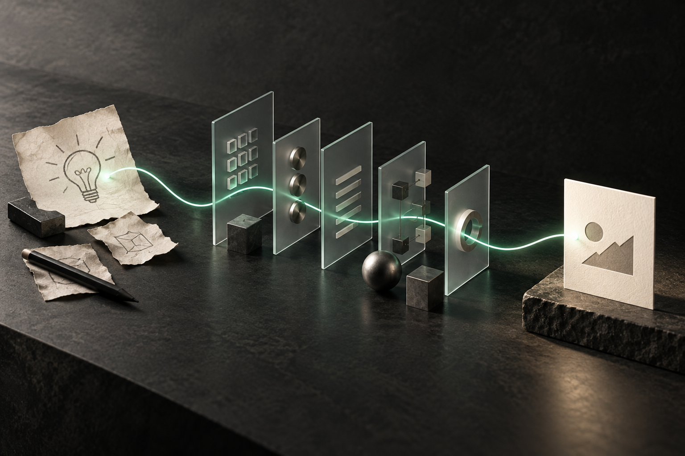
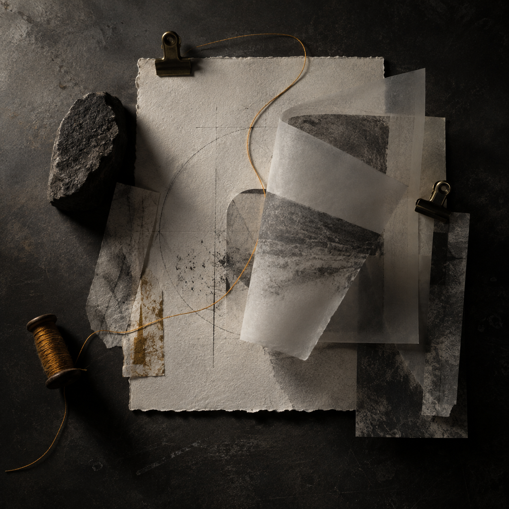

Dinle
Problemi, tekrarları ve fikrin nerede takıldığını buluruz.
ÖMER + MÜGE / BAĞIMSIZ DİJİTAL STÜDYO
LIVEFikir önce bir titreşimdir.
AI ustalığı, web, SEO ve içerik. Fikri büyütmek için gereken araçları tek bir sade akışta birleştiriyoruz.
Bir fikir. Doğru sistem. Görünen bir sonuç.

Fikir → sistem → sonuç.
Bizim işimiz, o akışı koparmadan ileri taşımak.
01 / GERÇEK İŞLER
AI, web, görünürlük ve içerik bizim için ayrı kutular değil. Aşağıdaki işler, bu parçaların gerçek hayatta nasıl birleştiğini gösteriyor.

Araçları sergilemiyoruz.
Onları araştırmanın, üretimin ve gerçek iletişimin içine yerleştiriyoruz.
02 / BİZ
Birimiz AI, otomasyon, web ve SEO sistemlerinin içini kurar. Diğerimiz içeriği, görsel dili ve deneyimi insanlara bağlar. Ortak noktamız: fikirleri sadece güzel değil, kullanılabilir hâle getirmek.
03 / NASIL ÇALIŞIYORUZ
Sonra doğru aracı seçip, onu insanların gerçekten kullanacağı bir akışa bağlıyoruz. Tasarım burada süs değil; sistemin anlaşılma biçimi.
Problemi, tekrarları ve fikrin nerede takıldığını buluruz.
AI, web, SEO ve içeriği ihtiyaca göre aynı akışta birleştiririz.
Sistemi ölçer, sadeleştirir ve gerçek hayatta çalışır bırakırız.
04 / AÇIK KANAL
Yeni bir web sitesi, AI destekli bir operasyon, SEO düzenlemesi ya da daha iyi bir içerik ritmi. İlk sinyali verin, birlikte nereye gidebileceğine bakalım.
itsomervural@gmail.com ↗